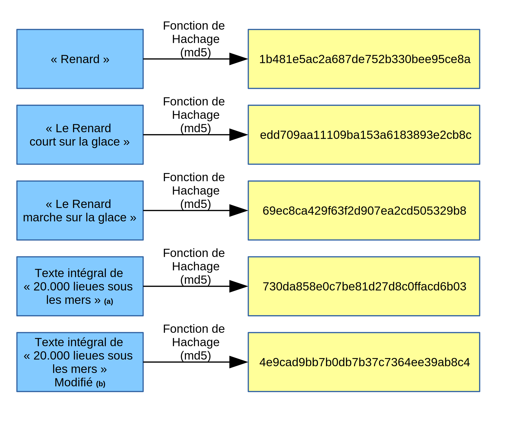

Fonctions de hachage (hors programme)¶
Il est important de se rappeler qu'un dictionnaire n'est pas ordonné (contrairement à l'objet « dictionnaire » de la vie courante, où chaque mot est classé suivant l'ordre alphabétique).
On n'accède pas à une valeur suivant sa position, mais suivant sa clé.
Dans une liste, lorsqu'on veut savoir si un élément appartient à une liste (problème de la recherche d'élément), il n'y a pas (dans le cas général) de meilleure méthode que le parcours exhaustif de tous les éléments de la liste jusqu'à (éventuellement) trouver la valeur cherchée.
Dans un dictionnaire, on pourrait s'imaginer qu'il va falloir parcourir toutes les clés et regarder les valeurs correspondantes. Il n'en est rien.
Pour comprendre cela nous allons faire un petit détour par les fonctions de hachage.
Qu'est-ce qu'une fonction de hachage ?¶
Une fonction de hachage est une fonction qui va calculer une empreinte unique à partir de la donnée fournie en entrée. Elle doit respecter les règles suivantes :
- la longueur de l'empreinte (valeur retournée par la fonction de hachage) doit être toujours la même, indépendamment de la donnée fournie en entrée.
- connaissant l'empreinte, il ne doit pas être possible de reconstituer la donnée d'origine
- des données différentes doivent donner dans la mesure du possible des empreintes différentes.
- des données identiques doivent donner des empreintes identiques.
Exemple : la fonction de hachage md5 permet de convertir un mot binaire (une chaîne, un fichier, ...) de taille quelconque en un mot de 128 bits représenté par une chaîne hexadécimale de 32 caractères (il y a donc $2^128 \simeq 10^39$ empreintes MD5 différentes).

Crédits : Unique Nitrogen, CC BY-SA 4.0, via Wikimedia Commons
{kind=link}